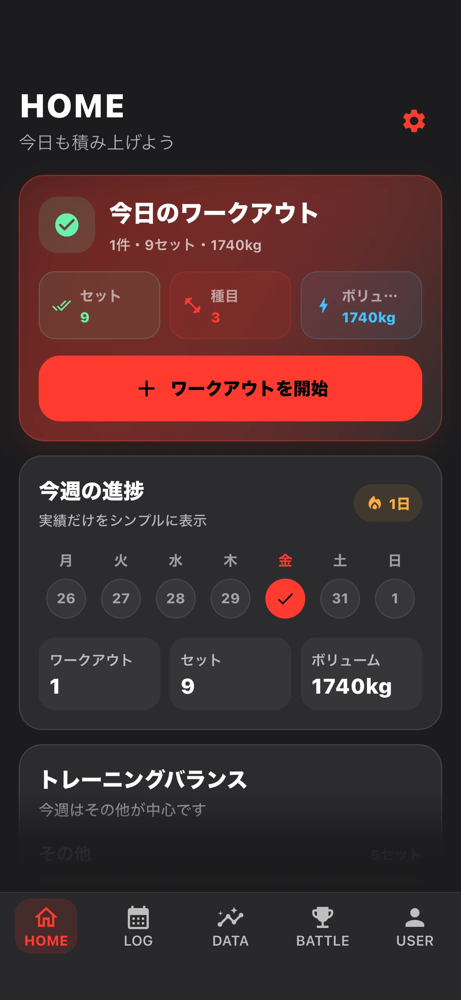
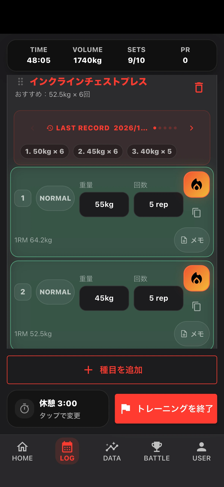
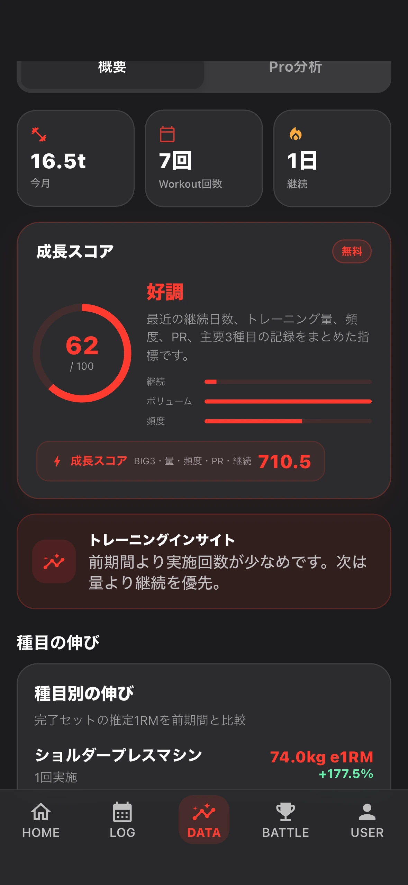

01RECORD / YOUR LAST SET
前回重量を、
忘れない。
トレーニング中の迷いを、最小限に。
前回の重量と回数を、その場で確認。セットを素早く記録して、休憩タイマーでテンポを保つ。操作より、次の一回に集中できるように。
前回記録をすぐ確認セット入力休憩タイマー
BUILT FOR THE NEXT REP
記録する。比べる。悔しくなる。
その気持ちが、次のトレーニングへ向かう力になる。
AVAILABLE ON iOS / MADE BY A LIFTER



記録が、反骨心に火をつける。
昨日の自分を超えたい。仲間に負けたくない。
Striveは、そんな感情を「またジムへ行く」理由につなげるために生まれた。
操作するためにジムへ行くんじゃない。
記録が次の行動につながる、その流れをひとつのアプリに。
トレーニング中の迷いを、最小限に。
前回の重量と回数を、その場で確認。セットを素早く記録して、休憩タイマーでテンポを保つ。操作より、次の一回に集中できるように。
努力を、見えるものに。
トレーニング回数、ボリューム、自己ベスト。何気なく重ねてきた一回が、次の目標を教えてくれる。
強さだけが、勝ちじゃない。
続けた回数でも、自己ベストの更新でも。友達の頑張りが、「次は負けたくない」と思うきっかけになる。
THE REASON BEHIND STRIVE
毎日のトレーニングで感じた小さな不便と、成長したい気持ち。
その両方を知る一人のユーザーとして、Striveを開発した。